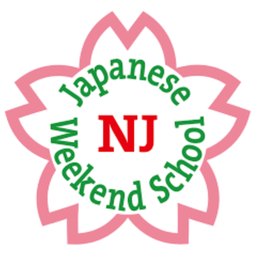

プライバシーポリシー
このアプリについて
「サミットライン」は、NJ補習校のサミット方面スクールバスを利用するご家庭のための、毎週の乗車変更連絡アプリです。保護者のボランティアが運営しています。
取得する情報
- 保護者のメールアドレス（ログインに使用）
- 家族名、保護者の電話番号、乗車場所
- 生徒の氏名・学年
- 毎週の乗車変更（お休み・片道など）、1回限りのゲストの名前、連絡事項
Googleアカウントでログインする場合、Googleから受け取るのはメールアドレスと名前だけです。それ以外のGoogleのデータ（Gmail、連絡先、カレンダーなど）にはアクセスしません。
利用目的
スクールバスの乗車人数の把握、当番の保護者による乗車確認、緊急時の保護者への連絡のためだけに使います。広告や販売には一切使いません。
情報を見られる人
- 各ご家庭：自分の家族の情報と変更連絡
- 登録済みの保護者：その週の名簿（生徒の氏名・学年・乗車場所・乗車予定・連絡事項）。当番がLINEグループで共有するためです。
- バス係（管理者）：すべての情報（電話番号を含む）
メールアドレスと電話番号は、管理者以外の保護者には表示されません。
保存場所
データはSupabase（米国のクラウドデータベース）に保存され、アクセスはログインした登録済みの保護者に限られます。ログイン用のメールはResendを通じて送信されます。
削除・訂正
情報の訂正や削除をご希望の場合は、バス係までご連絡ください。お子さんがバスを利用しなくなった場合も、ご連絡いただければ情報を削除します。
お問い合わせ
バス係（管理者）：canicula318@gmail.com
Summary in English
Summit Line is a volunteer-run app for families using the NJ Japanese Weekend School bus (Summit route) to send weekly ride changes. We store parents' emails, family name, phone numbers and pickup stop, students' names and grades, and weekly ride changes. With Google sign-in we receive only your email address and name. Data is used only to coordinate the school bus, is never sold or used for advertising, and is stored in Supabase. Email addresses and phone numbers are visible only to the bus coordinators. To correct or delete your information, contact canicula318@gmail.com.
最終更新：2026年11月20日 ｜ アプリを開く